画像の明るさやコントラストを調整して、人間の目やAIにとって「見やすく（認識しやすく）」するタスク。
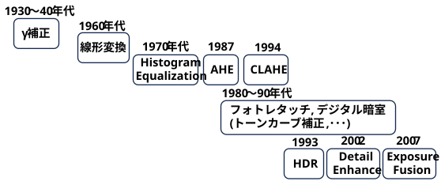
当時登場したブラウン管（CRT: Cathode Ray Tube）ディスプレイは、「入力された電圧」と「画面の発光輝度」が比例せず、電圧を2.2乗（あるいはそれ以上）した形（非線形）の明るさで表示してしまう物理的特性（ガンマ特性）を持っていました。
(data/task_image_enhancement/src/image_gamma.py)
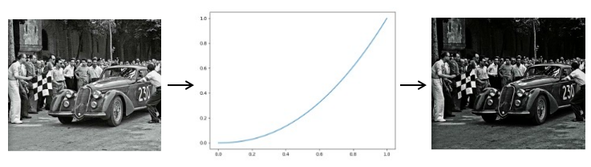
そのまま映像信号を送ると画面が暗くなりすぎるため、あらかじめ放送（送信）側で信号を「1/2.2乗」に逆補正しておく必要がありました。これが「ガンマ補正」です。
(data/task_image_enhancement/src/image_inverse_gamma.py)
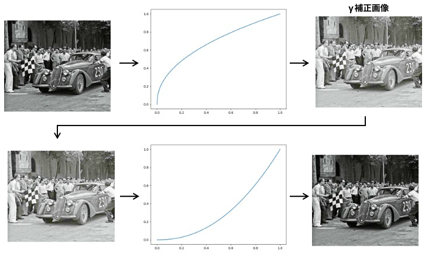
γ補正のγ
「ガンマ」という言葉自体は、テレビの誕生よりも前に写真工学の分野で「フィルムのコントラスト特性」を表す指標として使われていました。テレビ放送の黎明期（1930年代〜1940年代）に、写真の理論をそのままテレビの電子工学に応用したことで、自然発生的かつ組織的にシステムへ組み込まれていきました。
写真のネガフィルムにおいて、露出量（光の強さ）と画像の密度（黒さ）の関係をグラフ化した際、その直線の「傾き（コントラスト）」をギリシャ文字の \(\gamma \)（ガンマ） で表すことを最初に考案したのは、1890年代の写真化学者 フェルディナント・ハーター（Ferdinand Hurter） と ヴェロ・チャールズ・ドリフィールド（Vero Charles Driffield） です。彼らの頭文字を取って「H&D曲線」とも呼ばれますが、この時点で画像工学における「ガンマ＝階調の特性・再現性」という意味が定着しました。
(数学や物理の計算式において、入出力の関係（特性曲線）を表す「指数（べき乗の数値）」として伝統的にγが使われていた)
γ補正の歴史
1930年代に登場した初期のテレビカメラ用撮像管であるアイコノスコープ（Iconoscope）などは、光の入力に対して出力される電気信号が、偶然にも「最初から非線形（対数に近い曲線、γ≒0.45〜0.5付近）」になるという物理的性質を持っていました。
この撮像管の「不完全さ」が、結果的にブラウン管の非線形性を打ち消す役割を果たしたため、初期のシステムでは専用の補正回路をほとんど組まなくても、システム全体でバランスが取れるという「幸運な一致」が起きていました。
1940年代に入り、より感度が高く光に対して「線形（リニア、γ≒1.0）」に反応する次世代の撮像管（オルシコンやCPSエミトロンなど）が登場すると、ブラウン管（CRT）の非線形な特性（電圧に対して明るさが2乗以上で増える問題）を補正しなければ、映像の「中間調（グレー）」が極端に暗くなってしまうことがエンジニアたちの間で広く認識されるようになりました。
この問題を国家レベルの技術規格として議論し、「テレビカメラ側で一括してあらかじめ逆補正（逆ガンマ）をかけて送信するべきだ」 と正式に決定・提唱したのが、アメリカの NTSC（National Television System Committee：全米テレビ標準化委員会） です。
black-and-white（白黒テレビ）の規格を策定した 1940年〜1941年 の第1次NTSCにおいて基本的な考え方がまとめられました。
その後、1953年のカラーテレビ規格（第2次NTSC）において「ガンマ値 2.2」を基準とする補正が明確に組み込まれ、世界的な標準となりました。
1964年、米NASAのジェット推進研究所（JPL）が月探査機「レンジャー7号」が撮影した月面写真のノイズ除去や鮮明化を行いました。これが近代デジタル画像処理の始まりとされています。
当時の計算機は性能が非常に低く、複雑な計算はできませんでした。そのため、画像の全画素に対して「\(Y = aX + b\)」という最も単純な一次関数（線形変換）を適用し、コントラストが低くぼやけた画像の明暗を単純に引き伸ばす処理（コントラストストレッチング）が初期の定番として多用されました。
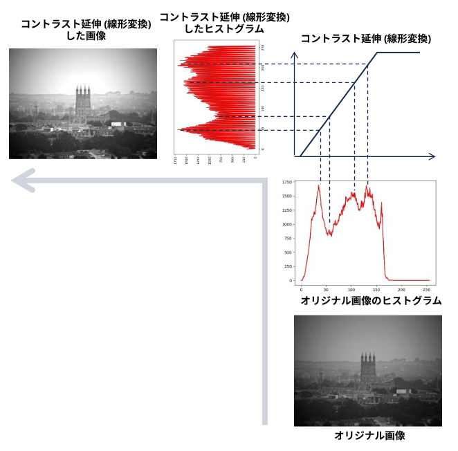
・ヒストグラム作成
(data/task_image_enhancement/src/create_histogram.py)
- 第一引数：画像ファイルへのパス
- 第二引数：opencv/numpy/なし(自分でピクセル数を数える) ･･･ ヒストグラム作成関数の選択
ヒストグラム延伸すると白飛びするので、上の図では、最大輝度を除いてヒストグラムを正規化した。
・ヒストグラム延伸
(data/task_image_enhancement/src/expand_histogram.py)
トラックバーで min と max を指定し、その範囲を 0～255 に延伸する。
ヒストグラムの形は保存されるが、min と max を指定する必要がある。
(または、ヒストグラムの上下○○％削除と指定する)
1970年代に入ると計算機の性能が向上し、画像全体の「統計データ（ヒストグラム）」を瞬時に取得・計算できるようになりました。
それまでの線形変換やガンマ補正は「人間が画像を見ながらパラメータ（\(a\) や \(\gamma \)）を手動で調整する」必要がありました。これに対し、「人間の主観に頼らず、計算機が自動で最適なコントラストに調整するアルゴリズム」として提案されたのがヒストグラム平坦化です。
画像全体の輝度分布の累積分布関数（CDF）を利用し、どんな偏った画像でも「確率的に均等な分布」へ自動変換する理論が確立され、医療用X線写真や戦闘機コックピットの自動鮮明化などで大活躍しました
アルゴリズム概要
・ヒストグラムを作成する ・・・ 同じピクセル値を持つピクセル (同値類) を台車に積んで並べるイメージ
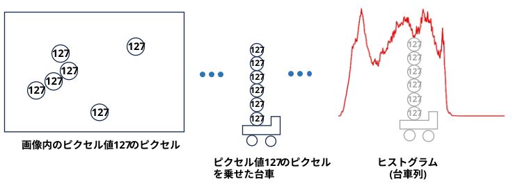
・ヒストグラムを累積する
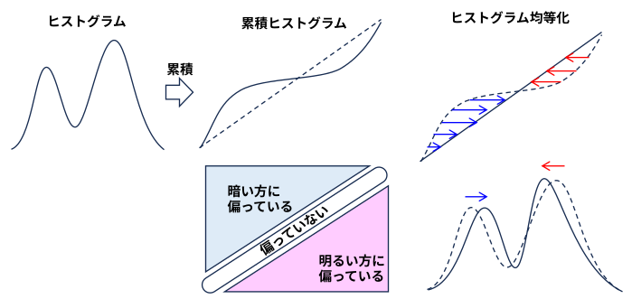
・累積ヒストグラムが直線になるように台車を移動する
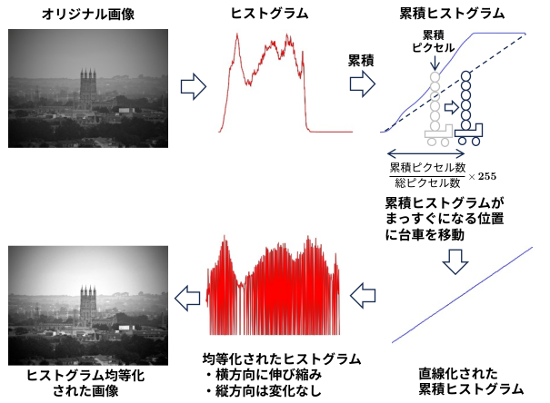
コードの断片
(data/task_image_enhancement/src/he_from_the_scratch.py)
# 台車用配列をクリア
equivs = []
# ピクセル値の同じピクセル(同値類)の座標 (y座標の配列, x座標の配列) を台車 (equivs) に乗せる
for i in range(256):
equivs.append(np.where(channel == i))
# 累積ヒストグラムを初期化
sum = 0
for i in range(256):
# 同値類のピクセルのy座標の数＝ヒストグラムを累算する
sum += len(equivs[i][0])
# 累積ヒストグラムが直線になるように台車を移動する (ピクセル値を更新する)
equalized[equivs[i]] = 255 * sum // nr_pixels
OpenCV を使えば、関数(cv2.equalizeHist()) を呼び出すだけ
(data/task_image_enhancement/src/he_by_opencv.py)
# カラー・プレーンに分割
b, g, r = cv2.split(src)
# プレーン毎に Histogram Equalization を実行
b = cv2.equalizeHist(b)
g = cv2.equalizeHist(g)
r = cv2.equalizeHist(r)
# カラー・プレーンをマージ
dst = cv2.merge((b, g, r))
(蛇足)
オリジナルのヒストグラムと均等化したヒストグラムが得られるので、2つのヒストグラムを内挿、外挿することで画像を手動補正することができる。
(自動で処理できるというヒストグラム均等化の主旨からは逸れるが･･･)
Blue, Green, Red 別々に補正量を選ぶことでホワイトバランスの手動調整のようなことが実現できる。(いじっていると、何が正解か判らなくなるが･･･)
(data/task_image_enhancement/src/simple_white_balance_by_he.py)
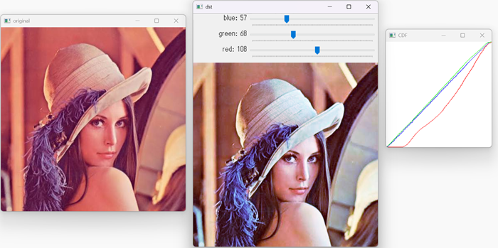
スティーブン・パイザー（Stephen M. Pizer）らによって、論文『Adaptive Histogram Equalization and Its Variations』の中で正式に提案されました。元々は航空機のコックピットディスプレイ用や医療画像（X線やMRIなど）の視認性を自動で向上させる目的で開発されました。
画像全体ではなく、画素の周辺領域（ローカル）ごとの統計情報を基に平坦化を行う。
カレル・ザイダーフェルト（Karel Zuiderveld）によって、有名な技術書シリーズ『Graphics Gems IV』の第VIII.5章として発表されました。AHEの弱点（平坦な領域でノイズまで過剰に強調してしまう問題）を克服するため、ヒストグラムに「上限（クリップリミット）」を設けてノイズの増幅を抑える改良を加えた手法です。
画像をいくつかのタイル（小領域）に分割し、コントラストの増幅率に制限をかけながら平坦化する。AHEのノイズ問題を劇的に改善。境界を滑らかにつなぐ補間処理（バイリニアなど）も行う。
アルゴリズム概要
(1) ヒストグラムをクリッピングする。
ヒストグラムの１つのビンに入るピクセル数を制限し、あふれた分を全ビンに等分配する
→ ヒストグラムは平坦に近づき、累積ヒストグラムは直線に近づく。
→ 補正量は少なくなる
→ Histogram Equalization のやりすぎが抑えられる
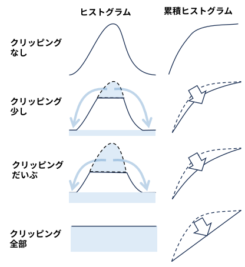
コードの断片
(data/task_image_enhancement/src/he_from_the_scratch_with_contrast_limitation.py)
sum = 0
clipped = 0
# ヒストグラムの1つのビンに入るピクセル数を制限し、あふれた分を clipped に集める
for idx in range(256):
if histogram[idx] > th:
clipped += histogram[idx] - th
histogram[idx] = th
# あふれた分を 256 等分してすべてのビンに加える
for idx in range(256):
sum += histogram[idx] + clipped // 256
newValue[idx] = 255 * sum // nrPixels
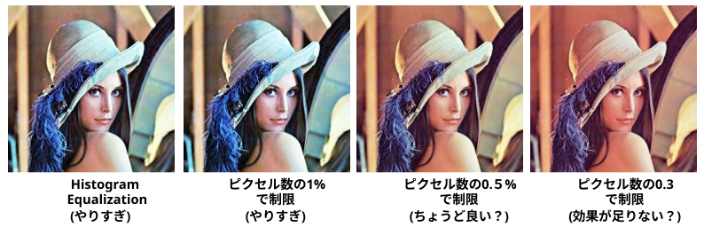
(2) 画像を小領域に分けて制限付き Histogram Equalizationを実施
各小領域の累積ヒストグラムに従った輝度の補正をバイリニア補間する
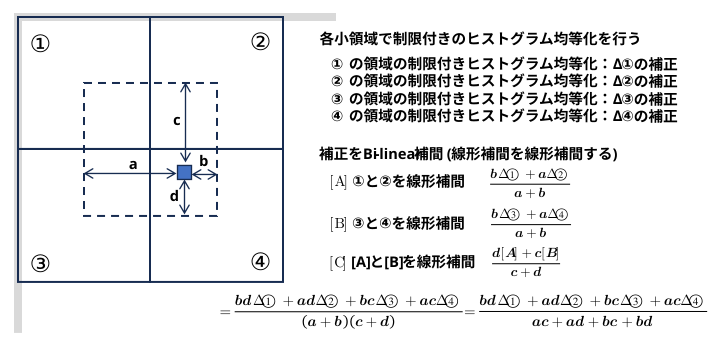
OpenCV を使えば、関数(clahe.apply()) を呼び出すだけ
(data/task_image_enhancement/src/clahe_by_opencv.py)
# clahe オブジェクト作成
clahe = cv2.createCLAHE(clipLimit=2.0, tileGridSize=(2,2))
# カラー・プレーンに分割
b, g, r = cv2.split(src)
# CLAHE を適用
dst_b = clahe.apply(b)
dst_g = clahe.apply(g)
dst_r = clahe.apply(r)
# カラー・プレーンをマージ
dst = cv2.merge((dst_b, dst_g, dst_r))
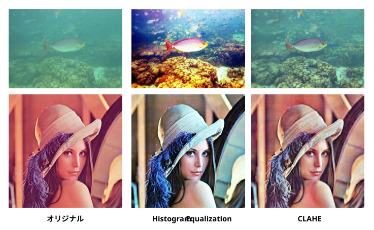
ガンマ補正、線形変換、対数変換など、これまで個別の数式で処理していたすべての階調変換を、「1つの自由な曲線（ベジェ曲線など）で直感的に操作できるように統合したインターフェース」として、Adobe Photoshopなどの画像編集ソフトに搭載されました。
OpenCVでトーンカーブ補正を行うには、
tone_curved = cv2.LUT(image, tone_curve)
とするだけでよいが、曲線を指定するGUIが面倒なので、式で入力してみた。
(data/task_image_enhancement/src/tone_curve.py)
・第一引数： 画像ファイルへのパス
・第二引数： トーンカーブの式。I の式で指定する。-1≦I≦1
(RGBに別々のカーブを指定する場合は)
・第二引数： Blue 用トーンカーブの式
・第三引数： Green 用トーンカーブの式
・第四引数： Red 用トーンカーブの式
※ 式に np.abs など numpy の関数を使用できる。
式にスペースを含めることはできない。
(例) tone_curve.py lena.jpg ((I+1)/2)**0.9 ((I+1)/2)**0.9 ((I+1)/2)**2.2
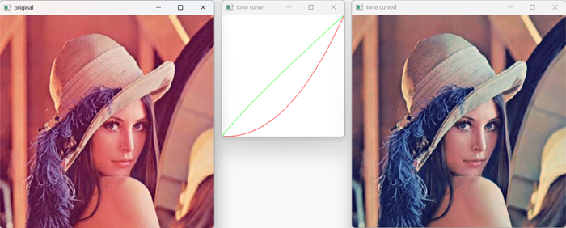
(例：solarisation) tone_curve.py lena.jpg 1-np.abs(I)
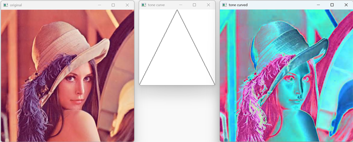
フランスの写真家Gustave Le Gray（ギュスターヴ・ル・グレイ）が、海と空の明暗差を同時に表現するために、露出を変えた2枚のネガを暗室で合成（コンビネーション・プリント）しました。これが世界初のHDR写真の試みとされています。
現代のコンピューターによるHDR Imaging（複数枚の画像から物理的な輝度情報を計算・合成する手法）は、1993年にスティーブ・マン（Steve Mann）教授らによって数理的な手法が開発・特許出願されました。
Multi-exposure_HDR_capture
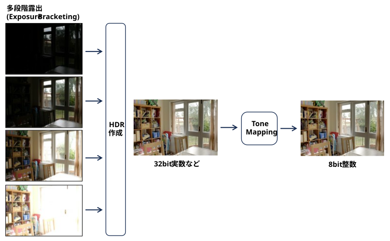
※ 後で出てくる Exposure Fusion を使うと HDR作成工程をスキップできる。
1998年に提案されたエッジ保存型非線形フィルターである「バイラテラルフィルター（Bilateral Filter）」を、2002年にフレド・デュランド（Frédo Durand）氏らがHDR（ハイダイナミックレンジ）画像のトーンマッピングやディテール強調に初めて応用しました。
『Spatially Varying Pixel Exposures for High Dynamic Range Imagery』 (SIGGRAPG1995)
『Recovering High Dynamic Range Radiance Maps from Photographs』 (SIGGRAPH 1997)
『Image Smoothing via \(L_{0}\) Gradient Minimization』 (SIGGRAPH Asia 2011)
コントラスト調整だけでは、被写体が明るくなりすぎたり、暗くなりすぎたりする。
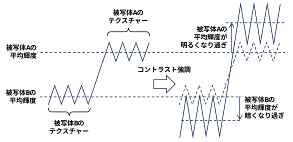
エッジ保存スムージングと組み合わせることで、画像や映像の細かい輪郭や質感（テクスチャ）をくっきりと際立たせ、解像感やシャープさを高めることができる （Detail Enhancement)
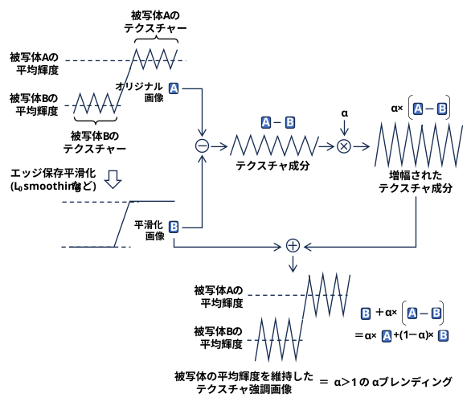
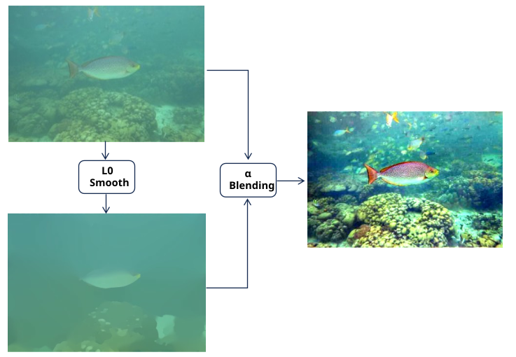
Iterative Least Squares による L0 smoothing 高速化版の python 実装が ここ にあったので、使わせてもらった。
(data/task_image_enhancement/src/l0enhance.py)
(準備) pip install opencv-python pyfftw
(引数) 画像ファイルへのパス
(使い方)
矢印キーでαブレンディングのα値を上げ下げする。
sキー押下でセーブ～終了
ESCキー押下でセーブせずに終了
『Exposure Fusion: A Simple and Practical Alternative to High Dynamic Range Photography』 (2007)
従来のHDR（ハイダイナミックレンジ）技術は、「複数枚の画像を一度1つの高ビット（HDR）輝度マップに統合し、それをさらにトーンマッピングと呼ばれる技術で通常のモニターに表示できるLDR画像に変換する」という複雑なプロセスを必要としていました。
これに対しこの論文が提案した "Exposure Fusion" は、中間のHDR画像を生成することなく、複数枚の露出（輝度）が異なる画像から「最も状態の良いピクセル」を直接抽出して1枚の画像に融合する手法です
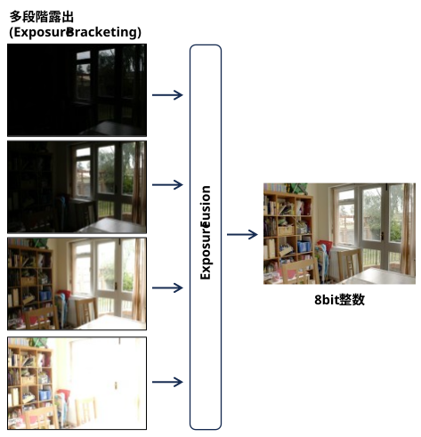
多段階露出だけでなく、色々なパラメータで補正した画像の『いいとこどり』した画像を作成することもできる
(コードの断片)
(data/task_image_enhancement/src/exposure_fusion.py)
引数で
・(画像ファイル1へのパス) (画像ファイル2へのパス) (画像ファイル3へのパス) ･･･
と指定するか
・(画像ファイルへのワイルドカード) (例： image_0*.png)
と指定する。
# Exposure Fusion モジュールのオブジェクトを作成する
mergeMertens = cv2.createMergeMertens()
# 画像のリストを渡すとフュージョンしてくれる
exposureFusion = mergeMertens.process(images)
(蛇足)
(data/task_image_enhancement/src/he_by_dividing_image_into_tiles_and_exposure_fusion.py)
・ 1枚の画像をタイルに分割
・ 各タイルで累積ヒストグラムを作成し、各輝度値に対する補正量を取得
・ 全画面に適用 → タイル数の数だけ補正画像ができる
・ Exposure Fusion で1枚の画像に融合
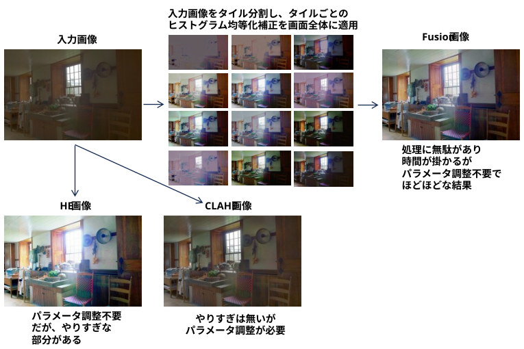